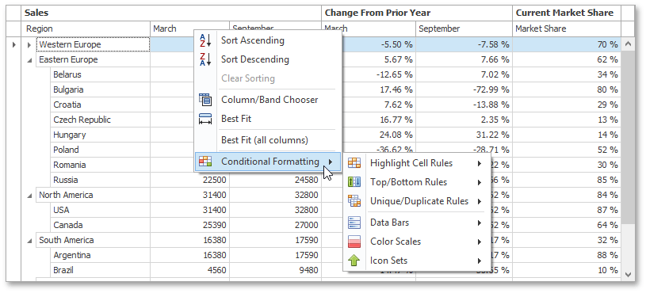

Apply Cell Conditional Formatting
You can highlight certain column cells that meet a specific condition using the Conditional Formatting menu. To invoke this menu, right-click the column to which a formatting rule should be applied and select Conditional Formatting.

Available format rules are displayed when expanding the Conditional Formatting menu. Different options are supported for different columns (depending on the type of data a clicked column displays).
Highlighting Cells that Meet a Specific Condition
Choose the Highlight Cell Rules menu item.

- Select the condition type. You can use one of the predefined conditions (the Greater Than..., Less Than.., Between... and Equal To... menu items), provide a custom condition (the Custom Condition.. item) or format cells that contain the specified text (Text that Contains...) or refer to a certain date interval(s) (A Date Occurring...).
Based on the selected condition type, an appropriate dialog window is invoked. You need to either enter a constant to be compared with the column's values, or select desired check boxes related to dates, or construct a custom condition in the dedicated editor. After that, choose a format style in the dropdown list, and click the OK button. To apply formatting to an entire row instead of a single cell, select the corresponding check box.

Highlighting Top or Bottom Cell Values
Choose the Top/Bottom Rules menu item.

- Select the rule type. You can highlight cells that contain the highest or lowest values (the Top 10%..., Bottom 10%..., Top 10 Items... and Bottom 10 Items... menu items), and values that are above or below the column's average (Above Average and Below Average).
According to the selected rule type, an appropriate dialog window is invoked. Enter a cutoff value (where required), choose a format style in the dropdown list, and click the OK button. To apply formatting to an entire row instead of a single cell, select the corresponding check box.

Highlighting Unique or Duplicate Cell Values
Choose the Unique/Duplicate Rules menu item.

- Select the rule type.
In the invoked dialog window, choose a format style in the dropdown list, and click the OK button. To apply formatting to an entire row instead of a single cell, select the corresponding check box.

Highlighting Cells Using Data Bars
A data bar fills a cell according to the ratio of the cell's value to the highest and smallest column values. A longer bar corresponds to a higher value, and a shorter bar corresponds to a lower value.
To apply a data bar format, do the following:
Choose the Data Bars menu item.

- Select the bar style format. Solid bars and bars with gradient fills are available in various colors.
Applying Color Scales
This format shows data distribution and variation using color scales. A cell is filled with the background color that is calculated according to the ratio of the cell's value to the highest and smallest column values. A two-color scale specifies two colors, which represent the minimum and maximum column values. Cell values residing between the minimum and maximum values are painted using a shade of these colors. A three-color scale additionally defines a color for the middle value and so, uses a gradation of three colors.
Choose the Color Scales menu item.

- Select one of the predefined two or three-color scales.
Highlighting Cells Using Predefined Icons
Icon sets allow you to classify column values into several ranges separated by threshold values, and display a specific icon in a column cell according to the range to which this cell value belongs. In the Positive/Negative group, the available icon sets divide column values into three ranges: positive values, negative values and values equal to zero.
Other icon sets divide column values into three, four or five ranges, displaying a specific icon for each range. If an icon set contains three icons, the ranges are as follows: [0%-33%), [33%-67%) and [67%-100%], where 0% corresponds to the smallest column value and 100% corresponds to the largest column value. The icon sets with four icons classify column values into four ranges: [0%-25%), [25%-50%), [50%-75%) and [75%-100%]. For the icon sets that contain five icons, the target ranges are: [0%-20%), [20%-40%), [40%-60%), [60%-80%) and [80%-100%].
Choose the Icon Sets menu item.

- Select one of the predefined icon sets.
Deleting Rules
If you have already applied one or more rules to columns, the additional Clear Rules item is displayed at the second level of the Conditional Formatting menu.

You can do one of the following.
To delete conditional formatting rules from the target column, click the Clear Rules from This Column menu item. If the column has no rules applied to it, this item is not shown.
or
- To delete formatting rules from all columns, click the Clear Rules from All Columns menu item .